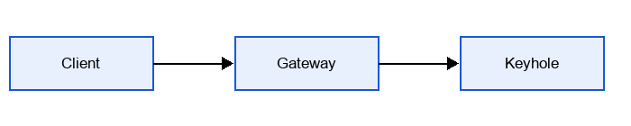

Gateway onboarding guide
Jump to retry policy · Back to top
Overview
The AcmeSync Gateway forwards refund and payment calls from partner shops to the ledger service.
Every partner gets its own tenant, and every tenant has its own retry budget and rate limit.
This guide describes how a new partner is onboarded, from the first sandbox key to the live switch.
The gateway runs in two regions, Frankfurt and Dublin, and a partner is pinned to one of them.
Architecture
A call enters through the edge proxy, which checks the partner's signature with SHA-256.
The router then picks the ledger shard from the tenant id and forwards the call over mutual TLS.
Responses are cached for 30 seconds only for read calls; refunds are never cached.
Each component writes its traces to the shared collector, kept for 14 days.

The signature scheme follows HTTP Message Signatures.
Retry policy
A failed call is retried at most three times, with waits of 2, 4 and 8 seconds.
A call that times out after 30 seconds counts as failed and uses one retry.
The retry budget is per tenant: once a tenant spends 50 retries in one minute, new failures are returned to the partner at once.
| Attempt | Wait before it | Counts against budget |
|---|---|---|
| 1 | none | no |
| 2 | 2 s | yes |
| 3 | 4 s | yes |
| 4 | 8 s | yes |
Retry examples
A refund that fails at 10:00:00 is retried at 10:00:02, 10:00:06 and 10:00:14.
If the third retry fails, the partner receives error 503 with the header Retry-After: 60.
A read call that fails is retried the same way but its cached answer is served if one exists.
Rollout steps
The rollout of a partner runs in five steps, each signed off by the partner manager.
- Create the tenant and issue a sandbox key.
- The partner runs the 40 test calls of the certification suite.
- Review the trace of every failed test call with the partner.
- Issue the live key and set the tenant's rate limit to 50 calls a second.
- Switch the partner's DNS entry and watch the dashboard for one hour.
Monitoring
The dashboard shows each tenant's error rate, latency at the 95th percentile and retry count.
An alert fires when a tenant's error rate stays above 2 percent for five minutes.
On-call engineers acknowledge an alert within 15 minutes during business hours.
Known issues
Refunds above 2,000 EUR can take longer than 30 seconds at the ledger and time out.
A fix that answers such refunds asynchronously is planned for release 2.15.0.
Until then, partners are asked to split refunds above 2,000 EUR into smaller ones.
Status of the fix: ASP-412
Glossary
Tenant: one partner's isolated configuration in the gateway.
Shard: one of the eight ledger databases a tenant's data lives in.
Sandbox key: an API key that reaches only the test ledger and expires after 14 days.
Attachments
trace-refund-4471.png · load-test-report-v2.pdf · gateway-2.14.0.log
Labels: onboarding, gateway, partners
Comments
Mara Keller: Looks good to me.
Jonas Weber: Thanks, I will add the Dublin region next week.